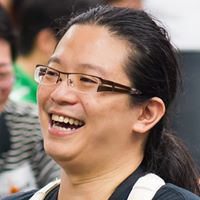
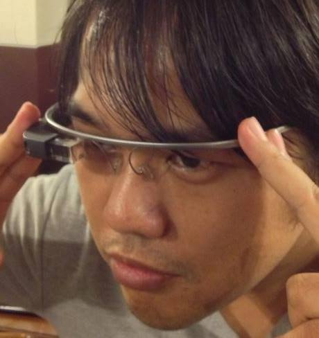
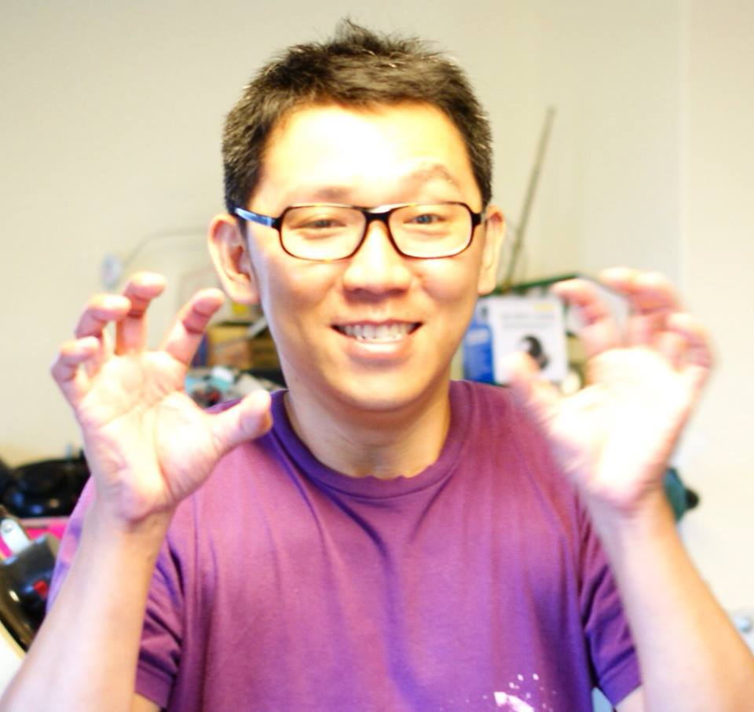
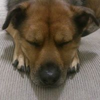
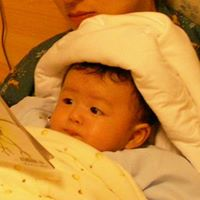

<style type="text/css">
    @import url(http://ocf.tw/css/semantic.min.css);
</style>


<section class="content" id="whoweare">
                    <h2>認識我們</h2>
                    <p>財團法人開放文化基金會於民國 103 年 6 月，由台北市政府文化局，北市文化文創字第10331440100號函核准成立，本基金會致力於推廣各類開放文化活動，包括: 開放源碼、開放標準、開放硬體、開放資料、開放系統等相關領域之活動。</p>
                    <ul>
                        <li>提供開放源碼相關社群及活動專戶、收取款行政事務</li>
                        <li>提供各社群贊助特定開發、議題研究專案的財務管道</li>
                        <li>提供社群商標及法律保護</li>
                        <li>提供國外非政府法人的對應窗口，對開放、開源有需要進一步聯繫者</li>
                        <li>針對政府科技制度、法律相關議題提出研究報告及建議</li>
                        <li>推動開放源碼於各領域的應用（如: 政府部門、非營利組織、業界…）</li>
                        <li>基金會自己應用、驗證過的技術，可輸出至其他政府、非政府組織</li>
                    </ul>

                    <a href="https://ocf-tw.hackpad.com/mmWrFHNfALE" class="more">捐助章程</a> 
                    <a href="https://ocf-tw.hackpad.com/oF2vtGMLI1d" class="more">捐助人簡介</a>
                    <a href="/subscribe/" class="more">訂閱電子報</a>
                    </p>
                </section>

                <!-- cols -->
<section class="cols" id="director">
<div class="ui three buttons">
  <button class="ui active button">One</button>
  <button class="ui button">Two</button>
  <button class="ui button">Three</button>
</div>
                    <h2>董事簡介</h2>

                    <div class="col">
                        
                        <div class="col-cnt">
                            <h3>高村長</h3>
                            <p>clkao (高嘉良，Chia-liang Kao) has been an active open source software developer since 2000. He is best known for creating SVK, a distributed version control system based on Subversion. He co-founded the g0v.tw initiative in 2012.
                                g0v.tw is an online community that advocates information transparency, focusing on developing tools for improving citizen participation.</p>
                            <a href="http://www.oreillynet.com/pub/a/network/2005/09/20/painless-merging-with-svk.html" class="more">專訪</a>
                            <a href="http://unwire.pro/index.php/2014/04/11/opendata_hktw/" class="more">專訪</a>
                            <a href="http://www.techtalk.tw/2013/09/episode-21-g0v.html" class="more">專訪</a>
                        </div>
                    </div>
                    <div class="col">
                        
                        <div class="col-cnt">
                            <h3>Bobchao</h3>
                            <p>Bob Chao(趙柏強) is the KKITX (part of KKBOX) project manager now, and he is best known as an active contributor in MozTW community and the chief coordinator of COSCUP.</p>
                            <a href="http://www.openfoundry.org/tw/foss-news/8982-coscup2013-organizer-bobchao-interview" class="more">專訪</a>
                            <a href="http://mepopedia.com/forum/read.php?148,1403" class="more">專訪</a>
                        </div>
                    </div>
                    <div class="col">
                        
                        <div class="col-cnt">
                            <h3>honki</h3>
                            <p>鄭鴻旗是台灣早期推廣 arduino 與三維印表機的先驅。他創立了 OpenLab Taipei 並致力提供一個給愛好新媒體藝術、數位藝術創作的同好互相交流的場域。</p>
                            <a href="http://techorange.com/2014/03/17/openlab-taipei-arduino/" class="more">專訪</a>
                        </div>
                    </div>

                    <div class="cl gap">&nbsp;</div>

                    <div class="col">
                        
                        <div class="col-cnt">
                            <h3>jimyhuang</h3>
                            <p>黃雋是網絡行動科技 (NETivism ) 的共同創辦人。網絡行動科技是台灣社會企業的先驅之一， 並致力成為非營利組織的軍火庫，讓非營利組織有足夠的資源，在網路戰場上衝鋒陷陣。</p>
                            <a href="http://www.seinsights.asia/story/257/11/1156" class="more">專訪</a>
                        </div>
                    </div>

                    <div class="col">
                        
                        <div class="col-cnt">
                            <h3>Pofeng</h3>
                            <p>李柏鋒是個在空閒時會幫忙推廣開放源碼的阿宅兒科醫師，他設立了科斯高有限公司來幫忙 COSCUP, PyCON.TW, MOPCON 等會議處理金流問題。現在他希望能協調科斯高與開放文化基金會一起共同來推廣台灣的開放源碼與開放文化的相關活動。</p>
                            <a href="http://wired.tw/2012/01/05/open_source_doctor/index.html" class="more">專訪</a>
                        </div>
                    </div>

                    <div class="cl">&nbsp;</div>

                </section>
                <!-- end of cols -->

<section class="partners" id="partner">
                    <h2>合作夥伴</h2>
                    <div class="partner-wrap">
                        <div id="partners-slider">
                            <div class="slider-holder2">
                                <div>
                                    <a href="http://g0v.tw/">
                                        
                                    </a>
                                </div>
                                <div>
                                    <a href="http://osdc.tw/">
                                        
                                    </a>
                                </div>
                                <div>
                                    <a href="https://tw.pycon.org/">
                                        
                                    </a>
                                </div>
                                <div>
                                    <a href="http://coscup.org/">
                                        
                                    </a>
                                </div>
                                <div>
                                    
                                </div>
                            </div>
                        </div>
                        <div class="slider-arr">
                            <a class="prev-arr arr-btn" href="#"></a>
                            <a class="next-arr arr-btn" href="#"></a>
                        </div>
                    </div>
                </section>

<section class="post" id="volunteer">
                    
                    <div class="post-cnt" id="volunteer">
                        <h2>志工募集</h2>
                        <p>
                            <strong>開放文化基金會召募志工中，歡迎加入 <a href="https://groups.google.com/forum/#!forum/ocf-general">ocf-general</a> 一起討論，我們需要您的力量來一起完成！</strong>
                        </p>

                        <ul>
                            <li>
                            </li>
                            
                        </ul>
                    </div>
                    <div class="cl">&nbsp;</div>
                </section>
